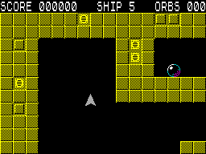

LOAD " "
LOAD " "
 Lunaris
LunarisCreated By:
Jonathan Cauldwell, Matthew Westcott
Release Year: 2004
Lunaris is a freeware action-shooter game for the ZX Spectrum 48K/128K, originally developed by Jonathan Cauldwell and published in 2004. It serves as a spiritual successor to the arcade classic Gravitar, featuring flip-screen gameplay where players control a spaceship to collect orbs while avoiding enemy turrets and managing gravity.
Development: Written in fast-action machine code at the ORSAM show in 2004, with music composed by Matthew Westcott.
Controls: Supports Kempston joystick and redefinable keyboard keys.
Gameplay: The objective is to collect all orbs on each level before proceeding; levels two and beyond introduce enemy gun turrets.
Features: Includes a password system to skip to lost levels, AY sound support, and is available for download in TAP format from archives like World of Spectrum and Spectrum Computing.
